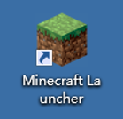

To join Virtual Imperial you will need to:
Imperial VPN
To connect to the Minecraft server and the Mumble server you need to be on the Imperial network. So if you are not on Imperial's Campus, make sure you are connected to the Imperial VPN! If you have not got it setup already you can find all the information on how to set it up HERE
Minecraft Installation
-
Go to https://www.minecraft.net/ and click "Get Minecraft".
The webpage takes some time to load if you are in China. Using Imperial VPN would make it faster.
-
Select "Computer" then "PC" and then "Minecraft: Java Edition".
DO NOT SELECT 'Minecraft: Windows 10 Edition'
-
Create your Mojang account. You may be asked to input a verification code sent to your email after you will be redirected to the purchase page.
Gmail and QQ mail work in China
If you are in China, you might see this error or get no response after you click “Create Account”. This is because Mojang uses Google’s reCAPTCHA for verification and that service cannot be used in China. The solution is to connect to a VPN (Imperial VPN works).
-
Time to buy! Enter an username you would like to use in game. There are a few payment methods available. If you have chosen the correct version (Java Edition), you should pay £17.95 (GBP).
If you are in China you will pay 165 (CNY), Alipay is also accepted.
-
After purchasing you should see this page. Click the green button to start downloading the Minecraft installer.
The installer will be around 2.56MB. Double click on it and a Minecraft Setup window will open, click "Next" until you see "Install".
Click "Install". If an admin pop-up appears just click "Yes". Then on the Minecraft Setup tab click "Finish" to complete the installation.
After installation, you may see a Minecraft shortcut on your desktop othewise you can find it by searching "Minecraft" in your Windows search bar.
Double click to open the Minecraft launcher and wait for Minecraft to update/download.
If you are in China, this step may take some time (around 2 hours). Using VPN helps but patience is the only solution here. If you enounter this error just close the launcher and open it again (it may take up to 10 tries). Do not give up though, thousands of users in China have successfully downloaded Minecraft.
You will be asked to input your Minecraft account details. After doing so, click on “LOGIN”.

Minecraft Set-up
Joining The World (Without Voice chat)
It is important to follow these steps to join the server since the server is run on an older version of Minecraft (1.15.2). Starting the game without selecting the correct version of Minecraft will prohibit you from joining the server.
You will only have to follow these steps once, when you first join!
-
Open the Minecraft launcher but do not press play. You will see the following window. In the top menu, click the “Installations” button.

-
Create a installation by clicking "New".
-
Give the new installation a name (for example “Imperial Virtual World”), and from the version drop-down menu select “release 1.15.2”. Leave everything else unchanged and press “Create”.
-
You should now see your new installation in the list. Press the “Play” button in the top menu to return to the main screen.

-
Select the installation that you just created from the drop-up menu and click “Play”. Minecraft will open. Make sure that before you enter the game you are connected to the Imperial VPN as instructed in the steps above.

-
Select "Multiplayer" then select "Add Server".

-
Input a server name of your choice and the IP address and port of the world that you wish to join. Press “Done”.
-
Double-click on the server that you just added. You will now enter the Imperial College Virtual World, enjoy!